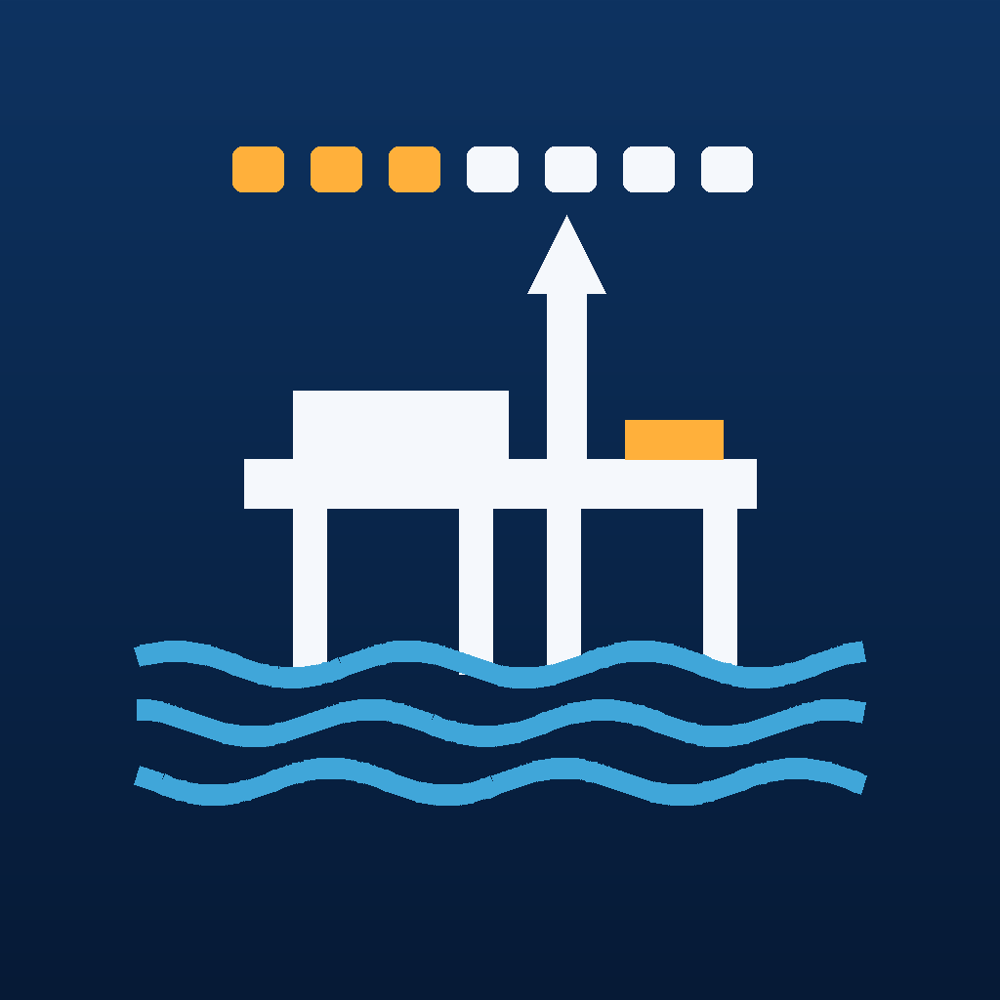

Offshore Scale
Aplicativo para iPhone e iPad que ajuda quem trabalha embarcado a acompanhar a escala (14×21, 14×14 ou personalizada), o saldo de AF, as horas extras, a interjornada, o Feriado Turno e o Banco de Horas.
Os dados ficam no seu iPhone. Não há cadastro, servidor próprio, anúncios ou rastreamento. O app não calcula valores em dinheiro.